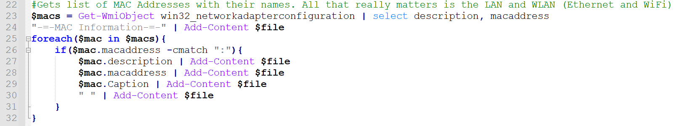

Software Guides
Hardware is nothing without software!!! Here are some guides about how to use reoccuring software!!!!!!!!!!!!!!!
What does this mean? Well, a computer's current state, even the state it's in RIGHT NOW could be considered an "image".
So let's say you want to take that current state, and put it on another computer... and then mass deploy that image on about 105 classroom computers.
Well, that's what the software ACRONIS allows you to do! You can capture the image, and then deploy it everywhere! Isn't that GREAT!?!!
Of course, this guide only covers the fact that Acronis exists and can let you image a computer. I can't get too specific into what goes into making the image after all.
Guide #1: Imaging a Computer
This process is made EASY with the use of my inventory script!!!!!! I CANNOT SHARE THIS BUT I WILL SHOW AN EXAMPLE!
The script lets you get all the information you need within a few clicks. It could use some modification still to make it quicker, but the concept is simple.
You run the script, it pulls all the information with many different commands, and then exports the results to a nicely formatted text document. This provides for easy reading of the information, and little interaction with the computer's specifics.
Guide #2: Inventorying
So, let's say that for some reason, Acronis from Guide #1 won't see the drive that you are trying to write over with an image. Lucikly, there is a solution!
Since we don't care about what we are wiping over (unless you do, if so back up the files before proceeding!), we can nuke the drive by using GPARTED. The amd64 installation is the way to go for most computers.
That's usually the quickest way, but there is another solution through the use of a Windows 10 Boot Media. This lets you get boot tools, and then you can get into a command prompt outside the main OS to run a diskpart command.
If none of these work, it's possible the BIOS settings of the system may need to be adjusted in order to account for a certain drive format. This most likely will never be the case if the computer was recently already imaged, however.